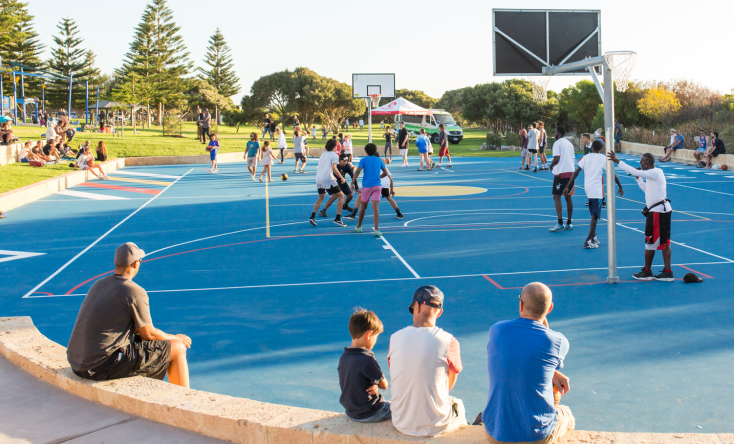

Social, Casual, Pick-Up Sports (SCPS)
Overview
This project will be about an app called SCPS which stands for Social, Casual, Pick-up Sports. It is an app that allows users to find people to play sports with or find people to play sports for their team. The motivation comes from wanting more people in the community to engage in more sports and physical activities to create a healthier lifestyle. It's not easy to create such an app or any app but with time and commitment, a successful app can be created and benefit those who are wanting to play sports.
Motivation
Individual and societal health and welfare are aided by participation in sports at all levels and abilities. Sporting is a big part of the Australian community with 54% of women and 69.6% of Men participating in some sort of sporting activity (Participation statistics and trends 2019). A lot of sports involve having a team to play with, such as basketball which needs 5 people or volleyball which needs 6 people per team. This restriction stops people from joining social competitions or just playing casually due to the mere fact that they can’t make a full team. Also, people who don’t want to play for a team but just want to play some pick-up casual games can find it hard to find people to play with. This is where the motivation comes from when designing this app.

Description
Social, Casual, Pick-Up Sports (SCPS) is a mobile app that allows users to find people to play sports with or help people users find people to join their sporting teams. This can be either be for competition, social, or just casual/pick-up. This can be very useful for people who want to play sports but don’t have anyone/enough people to play with or for people who need a player to join their team to make a full team or for people who need someone to replace a player if someone is injured or away. This app can also be useful for users who need a player of the opposite gender to play; because a lot of competition requires a certain amount of each gender to play as this app encourages all genders and ages to use it. Starting off, when users first open the app, they will be greeted with their information sections which will include users putting a picture of themselves, personal information and a description of themselves that can include, past sporting accomplishments, experience, the type of sport they’re interested in, what kind of positions they play and what leave they’re willing to play at (casual, competition or social). They will also have to put in their council area as this is how they will be matched with other people. Once all this information is in the system it will group people into their own and surrounding LGA’s. Then users will be greeted with two options, find players to play sport with or find a player for your team. The find players to play sport with option will lead to a menu where other users have put that they are wanting a person to play sports with and vice versa. After selecting a person, they will be sent a message that you are interested in playing with them and they can choose either to decline or accept the offer. Then the users will talk to each other and they can decide whether or not they want to play. The app will also include a review system that allows users to give ratings out of 5 stars to the people they play with. This includes fairness, skill, sportsmanship and friendliness. This will give users who are looking for people to play with an outline of how it is to play with the person. SCPS will require users to be over 18 as SCPS is a match-making app so it can only allow adults due to children safety and wellbeing. SCPS will be user friendly as it is targeted to all ages young and old to encourage sports in the communities. By saying that it is user friend won’t make it easy to make, there are a few drawbacks that will have to be hurdled before being published. Apps In comparison to a web app or a website, a mobile app is a more expensive technology. Its budget is mainly limited by the level and cost of experienced Android and iOS mobile developers. While hybrid applications are included in cross-platform solutions, they receive fewer frequent updates. Human drawbacks can be that these types of apps can be dangerous if someone who is looking to do some criminal activity can see this as an easy target to get people.

Tools and Technologies
When it comes to apps development, you must be prepared to put in the effort. Programming is a time-consuming process that requires patience and dedication. To make an app for Android, we would use Java, and if we want to make an app for iOS, we would use Objective-C or Swift. In the beginning, we use as many frameworks and BaaS providers as possible, such as Parse (www.parse.com), because they allow for rapid development.
Skills Required
Because of the growing popularity of smartphones, mobile app development has become the largest industry. Because you'll be working with programming, you'll need a technical background to become an app developer. It requires skills such as knowledge of different Programming Languages, Cross-Platform App Development, UI/UX Design, and Knowledge of Cybersecurity just to name a few. These skills won’t be easy to obtain but through hard work, they can be gained. With the hardware, there is a lot of open sources online that can be used but many paid sources are much easier to work with and makes it .
Outcome
App development can be very hard but with time and effort, a successful app can be made. SCPS app, if successful, will be very important to the community. Especially in this covid lockdown where everyone is locked at home, after it all, people can get on the app and easily find people willing to play sports with them, beginner or expert. Studies show that people who participate in sports and leisure have stronger social relationships, live in safer communities, and are usually healthier and happier than those who do not. Communities become stronger, healthier, happier, and safer as a result of sports and leisure.